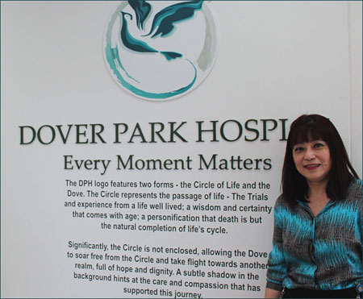

后记
作者
赖国芳
(简介)
Dr Stella Wee, Chief Executive Officer, Dover Park Hospice

Dover Park Hospice continually aims to create the very best environment possible for terminally ill patients to receive consistent care services along their end-of-life journey from a team of Palliative Care professionals and support staff.
We are deeply committed to provide the critical “touchpoints of care” at the crucial last stage of life.
This project is timely as it provides valuable insights and snippets from hospice patients, families and caregivers who had benefitted from the extensive support received, to navigate the end-of-life journey with confidence and ease.
People are generally more aware and open to be empowered and hence, proactive in managing end-of-life issues and this has helped patients to pass on peacefully with comfort, grace and dignity; for our patients, "Every Moment Matters".